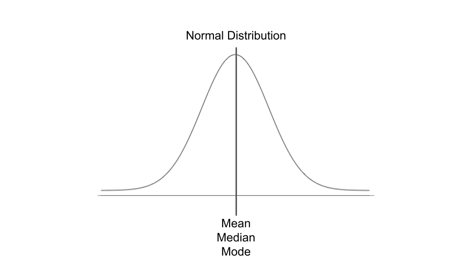

Introduction
Congratulations, you’ve made it to the final tutorial of this course! In this final tutorial we will learn some foundational statistical concepts as well as how to generate descriptive statistics using R.
In this final tutorial, we will cover the following:
- Terminology
- Levels of measurement
- Summary statistics
- Measures of central tendency
- Measures of dispersion
- Distribution shape
- Frequency tables
Great, let’s get started!
Terminology
Before we dive into the world of descriptive statistics, let’s discuss some basic terminology.
Poulations and Parameters vs. Samples and Statistics
Parameters are numbers that describe the properties of an entire population, and statistics are numbers that describe the properties of a sample. In most research cases, it is difficult to collect data for an entire population, so we instead take a sample in which we can make inferences about the population.
Independent and Dependent Variables
Researchers often examine relationships between variables in a sample of interest. Variables are characteristics of interest in a sample or population that can take on different values. For example, variables can be height, age, test scores, etc.
Researchers want to examine relationship between variables as guided by their specific research question. This examination is done by specifying an independent variable and a dependent variable. An independent variable is a variable that varies or can be manipulated to explore the effect or relationship it has with a dependent variable. As the name implies, independent variables are variables that are independent of other variables/characteristics. Meaning that no other variables in the research study impact the independent variable.
Independent variables can be experimental, that is directly manipulated by the researcher (e.g., treatment conditions in an experiment), or naturally occurring characteristics of a subject such as height, weight, education, age.
A dependent variable, also called the outcome variable, is hypothesized to change as a result of changing or manipulating the independent variable. In other words, the dependent variable’s changes are contingent upon the independent variable. The dependent variable is the outcome of interest. A researcher aims to examine how the dependent variable changes as the independent is manipulated or varied. ### Example
A classic example of independent and dependent variables is examining the relationship between students’ study hours and their test score. In other words, if students study more, do their test scores increase? If a researcher wishes to examine the relationship between study hours and test performance, the independent variable would be the amount of time a student studies and the dependent (or outcome) variable would be test scores.
Levels of Measurement
In statistics, variables are often quantified based four levels of measurement:
- Nominal
- Ordinal
- Interval
- Ratio
The levels of measurement are listed in ascending order, starting with nominal variables, based on the progressively detailed information they provide.
Nominal Variables
Nominal variables are names of categories data can fall in. They are also known as categorical data. An easy way to remember what nominal variables are is to think nominal = names. For example, students’ major can be considered a nominal variable in a dataset with postsecondary student data (e.g., accounting major, statistics major, education major). Nominal variables do have a countable number of distinct groups so they cannot be unknown to the researcher or infinite. While nominal variables have a countable number of named categories, they don’t have a natural order. Going back to our example of students’ major, there is not natural order of accounting, statistics, or education majors as categories. Statistics is greater, equal, or less than the other majors.
Other examples of nominal variables can be gender, race/ethnicity, college minors.
Binary variables (also called dichotomous variables) are a type of nominal variables which can only have two distinct values. Examples of binary variables are pass/fail, control/treatment.
We often set nominal variables as factors in R to ensure that the data is treated as categorical data.
Ordinal Variables
Ordinal variables are similar to nominal variables since they too have categories of data, however, they provide more information than nominal variables, since ordinal variables can be ranked following a natural order of values.
Example of ordinal variables are education levels (primary, secondary, post-secondary), income (low, middle, high), class rank.
While ordinal variables can be ranked, we don’t know the exact degree of difference between these categories. Let’s take class rank for example. Person A might have a class rank of 10, Person B a class rank of 11, and Person C a class rank of 12. While we know the rank of these individuals, we don’t know the relative absolute different between these individuals. For example, Person A might have a GPA of 3.978, Person B a 3.969 GPA, and Person C a 3.900 GPA. While they’re class rank is ordered, they don’t have the same distance apart from each other in terms of GPA which is why we rank them if we don’t know the relative degrees of difference between them.
Interval Variables
The next most descriptive level of measurement are variables measured on an interval scale. Interval scales are used for data that’s continuous without a true zero. For example, SAT scores are measured on an interval scale where the distance between two points is meaningful (unlike ordinal variables) since we know the relative degrees of difference between these two points. However, SAT scores don’t have a true zero point (or 0 does not represent the absense of the trait being measured).
Ratio Variables
The most descriptive level of measurement are ratio variables. Like interval variables, ratio variables are also used for continuous data, but are different for having a true zero measurement which represents a lack of an attibute. For example, height, weight, speed, and time are all ratio variables as they have true zero measurements which represents no height, weight, speed, or time.
Ratio variables are the top level of measurement as you can order the observations, know the difference between any two values, and be able to assess ratios between values as they have a true zero measurement
Summary Statistics
We’re going to return back and use the General Social Survey (GSS) built in dataset for this final tutorial.
gss <- forcats::gss_cat
# Note: You may need to install the forcats package
gssDescribe
We’ve introduced the describe() function from the
psych package in the second module, but we will review it
once more in this tutorial.
The describe() function is a useful function in first
getting to know your data. For this function, you provide the name of
the data frame as the first argument of the function. The output
provides the following for each variable in the dataset: the number of
observations (n), and several descriptive statistics (e.g., mean,
standard deviation, standard error, etc.).
Do you remember why certain variables have an asterisk next to their
names? The asterisk is an indicator that these variables are factor
variables! In the gss data set, it shows that
marital, race, rincome,
partyid, relig, and denom are all
factor variables. But isn’t it strange that these variables still have
descriptive statistics associated with them? Good point. The descriptive
statistics provided by describe() for each of these
variables is meaningless so it would be best to ignore these statistics.
It’s like trying to take the mean of the colors in a crayon box, you
can’t! However, the descriptive statistics provided for the variables of
integer values is quite useful. For example, the average age of
respondents in this sample data set is approximately 47 years old.
psych::describe(gss)Here’s a list of all the descriptive statistics given when using
describe()
- vars: the number of variables presented cumulatively
- n: number of valid cases
- mean: average (if applicable)
- sd: standard deviation (if applicable)
- median: standard or interpolated median (if applicable)
- trimmed: trimmed mean defaulting to .1 (if applicable)
- mad: median absolute deviation (if applicable)
- min: minimum value (if applicable)
- max: maximum value (if applicable)
- range: range of values (if applicable)
- skew: skewness (if applicable)
- kurtosis: kurtosis (if applicable)
- se: standard error (if applicable)
Summary
The summary() function is a base R function that can be
used to generate quick descriptive statistics. Similar to the
describe() function, you provide the name of the dataframe
you wish to generate descriptive statistics.
summary(gss) year marital age race
Min. :2000 No answer : 17 Min. :18.00 Other : 1959
1st Qu.:2002 Never married: 5416 1st Qu.:33.00 Black : 3129
Median :2006 Separated : 743 Median :46.00 White :16395
Mean :2007 Divorced : 3383 Mean :47.18 Not applicable: 0
3rd Qu.:2010 Widowed : 1807 3rd Qu.:59.00
Max. :2014 Married :10117 Max. :89.00
NA's :76
rincome partyid relig
$25000 or more:7363 Independent :4119 Protestant:10846
Not applicable:7043 Not str democrat :3690 Catholic : 5124
$20000 - 24999:1283 Strong democrat :3490 None : 3523
$10000 - 14999:1168 Not str republican:3032 Christian : 689
$15000 - 19999:1048 Ind,near dem :2499 Jewish : 388
Refused : 975 Strong republican :2314 Other : 224
(Other) :2603 (Other) :2339 (Other) : 689
denom tvhours
Not applicable :10072 Min. : 0.000
Other : 2534 1st Qu.: 1.000
No denomination : 1683 Median : 2.000
Southern baptist: 1536 Mean : 2.981
Baptist-dk which: 1457 3rd Qu.: 4.000
United methodist: 1067 Max. :24.000
(Other) : 3134 NA's :10146 The summary() function calculate and returns the minimum
value, the 1st quartile value (25th percentile), the median value (50th
percentile), the 3rd quartile value (75th percentile), and the maximum
value for numeric values. If there are factors in the dataset, the
function returns the frequency counts for each of the factor levels (or
groups). If there are NAs in the dataset,
summary() excludes these cases from being counted in the
output.
Five-Number Summary
The fivenum() function returns five summary statistics:
the minimum value, 25th percentile, median (or 50th percentile) 75th
percentile, and maximum value for the input data. Let’s use the
fivenum() function for the age variable in the gss
dataset.
fivenum(gss$age)[1] 18 33 46 59 89Please note, that the fivenum() function only accepts
numeric input values. You will receive an error if you provide data that
are factors or characters.
Great! These are quick and easy ways to generate a comprehensive output of descriptive statistics.
Measures of Central Tendency
A measure of central tendency is a single value that describes the central position of a dataset with numeric values. Measures of central of tendency include mean (the average), median, and mode. While these are all valid measures of central tendency, there are certain conditions were some of these measures are more appropriate than others.
Mean
We can find the mean by providing a vector of numeric values to the
built in R function mean(). Note, this function does not
exclude NA cases so we have to tell R to only include
complete observations.
mean(gss$age, na.rm = TRUE)[1] 47.18008Using mean as a measure of central tendency is appropriate if we have interval/ratio variables that normally distributed with no outliers. If the data are skewed, the median is a more appropriate measure of central tendency to calculate for interval/ratio variables.
Median
Like the mean() function, we can find the median by
providing a vector of numeric values to the built in R function
median(). Note, this function does not exclude
NA cases so we have to tell R to only include complete
observations.
median(gss$age, na.rm = TRUE)[1] 46As mentioned previously, the median is the most appropriate measure of central tendency for skewed interval/ratio data as well as ordinal data.
Mode
Unlike mean() there is no built in R function to
calculate the mode. However, you can install and load the package
DescTools package and use their Mode()
function to calculate the mode. Alternatively, we could write a simple
function to compute the mode. Mode is the most appropriate measure of
central tendency when we have nominal (categorical) data.
compute_mode <- function(x) {
unique_x <- unique(x)
counts <- tabulate(match(x, unique_x))
unique_x[which.max(counts)]
}
compute_mode(gss$age)[1] 40Measures of Dispersion
Measures of dispersion describes the spread of data. Common measures of data dispersion include variance, standard deviation, and range.
Variance
The var() function calculates the variance of a numeric
vector. Variance measures how much data are spread out and is
mathematically defined as the average of squared differences from the
mean. Note, this function does not exclude NA cases so we
have to tell R to only include complete observations.
var(gss$age, na.rm = TRUE)[1] 298.8576Variance is difficult to interpret since it is in squared units. Instead we take the square root of the variance to calculate the standard deviation (which is the most commonly used measure of dispersion).
Standard Deviation
The sd() function calculates the standard deviation of a
numeric vector. Standard deviation also measures how much data are
spread out and is mathematically defined as each data point’s deviation
relative to the mean. Note, this function does not exclude
NA cases so we have to tell R to only include complete
observations.
sd(gss$age, na.rm = TRUE)[1] 17.2875Range
The range is also another measure of dispersion and be calculated
using range() function. The output of this functions tells
us the minimum value of a numeric vector as well as the maximum
value.
range(gss$age, na.rm = TRUE)[1] 18 89Distribution shape
The shape of the distribution of data can have important implications on our data analytic choices. Examining the skewness and kurtosis are two ways of checking the distribution shape of our data.
Skewness
Skewness measures the symmetry of our data. Symmetrical data follows the shape of a classic bell curve where the left side of the data is identical to the right side up until the middle point (if you were to fold the distribution vertically in half). A symmetric distribution is where the mean, median, and mode for the data are all the same.

A right-skewed distribution (positively skewed) has a long right tail with the mean closest to the tail compared to the mode and median.

A left-skewed distribution (negatively skewed) has a long left tail with the mean closest to the tail compared to the mode and median.

The best way we can examine the distribution of a dataset is to plot
it using the hist() function! Let’s examine the density of
the age variable in the gss dataset.
hist(gss$age, freq = FALSE)
lines(density(gss$age, na.rm= TRUE), col = "blue") tvhours variable in
the gss dataset.
hist(gss$tvhours, freq = FALSE)
lines(density(gss$tvhours, na.rm= TRUE), col = "blue") We can also calculate the skewness values using the
describe() function in the psych package!
psych::describe(gss$age) psych::describe(gss$tvhours) What do you make of these skewness values?
Below is a brief guideline for skewness benchmarks.
- Symmetric: Values between -0.5 to 0.5
- Moderated Skewed data: Values between -1 and -0.5 or between 0.5 and 1
- Highly Skewed data: Values less than -1 or greater than 1
Kurtosis
Kurtosis measures the tailedness of data distribution. In other words, kurtosis measures the degree to which data points cluster in the tails or peak of the distribution.

There are 3 types of kurtosis:
- Mesokurtic: Normally distributed data. Kurtosis value of 0 indicates a normally distributed data
- Leptokurtic: Distribution has a sharp peak and fatter tails. Kurtosis is positive with a value > 3
- Platykurtic: Distribution has a lower and wider peak with thinner tails. Kurtosis is negative with a value < 3
Similar to skewness, we can assess kurtosis by plotting the density
of our data using a histogram. We can also use the
describe() function in the psych package to
assess kurtosis.
psych::describe(gss$age) psych::describe(gss$tvhours) What do you think of the kurtosis values of the data for the
age and tvhours variables in the
gss dataset?
Frequency Tables
Frequency tables are important to generate when trying to get a better understanding of a dataset. Frequency tables show the distribution (or counts) of observations that occur based on the option within a variable. They are helpful to understand which options occur more or less often in a dataset.
Table
We can generate a frequency table by using the table()
function in base R. Frequency tables can be used for nominal, ordinal,
interval, and ratio data. However, frequency tables may be more
appropriate for nominal, ordinal, and (at times) interval data.
Let’s walk through a few examples.
Let’s generate a frequency table for the age variable in the gss dataset.
table(gss$age)
18 19 20 21 22 23 24 25 26 27 28 29 30 31 32 33 34 35 36 37
91 249 251 278 298 361 344 396 400 385 387 376 433 407 445 425 425 417 428 438
38 39 40 41 42 43 44 45 46 47 48 49 50 51 52 53 54 55 56 57
426 415 452 434 405 448 432 404 422 435 424 417 430 390 400 396 387 365 384 321
58 59 60 61 62 63 64 65 66 67 68 69 70 71 72 73 74 75 76 77
326 323 338 307 310 292 253 259 231 271 205 201 213 206 189 152 180 179 171 137
78 79 80 81 82 83 84 85 86 87 88 89
150 135 127 119 105 99 100 75 74 54 57 148 In looking at the youngest and oldest respondents, we have 91 respondents in the gss dataset who reported their age as 18 years old and 148 respondents who reported their age as 89. However, frequency tables can be less useful if there are too many response options for a variable (such as the age variable in the gss dataset). It might be more helpful to create groups to better digest the data.
Let’s wrangle the data.d <- gss |>
mutate(age_groups = ifelse(age >= 20 & age <= 29, "20s",
ifelse(age >= 30 & age <= 39, "30s",
ifelse(age >= 40 & age <= 49, "40s",
ifelse(age >= 50 & age <= 59, "50s",
ifelse(age >= 60 & age <= 69, "60s",
ifelse(age >= 70 & age <= 79, "70s",
ifelse(age >= 80, "80s", as.character(age)))))))))table(d$age_groups)
18 19 20s 30s 40s 50s 60s 70s 80s
91 249 3476 4259 4273 3722 2667 1712 958 Much better and more informative!
Great, let’s generate a frequency table fortvhours.
table(gss$tvhours)
0 1 2 3 4 5 6 7 8 9 10 11 12 13 14 15
675 2345 3040 1959 1408 695 478 119 262 19 122 9 96 9 24 17
16 17 18 20 21 22 23 24
10 2 7 14 2 2 1 22 The frequency table for the tvhours variable isn’t too
clustered like the age variable was in the initial frequency table we
created. The output is useful as is for tvhours.
Count
We can also generate frequency tables by using the
count() function in the tidyverse.
gss |>
count(tvhours)Nice!
We can also easily sort our data using the count()
function.
gss |>
count(tvhours, sort = TRUE)We can also generate a frequency table by multiple variables.
gss |>
count(marital, race, sort = TRUE)Tasks
Now that we have completed the final module on descriptive statistics, let’s engage in the final tasks for this course.
- Open the R script you created in the previous module. Go ahead and run this script to make sure your code works (we are going to pick up where we left off last time).
- Generate descriptive statistics for each variable in the
hsbtransformeddataset. - Please list the level of measurement for each variable (e.g., nominal, ordinal, interval, ratio) and your justification.
- Please list and report the appropriate central tendency measure for each variable and your justification.
- Report the skewness and kurtosis for each variable.
- Please pick three variables and generate a frequency table for each of these variables. Is there anything interesting based on these frequency tables?
- What do you find interesting or curious about the statistics generated from this dataset?
Reflect
Now that you have completed the final task for the course, let’s take some time to reflect. What is one thing that surprised you? What is one thing that confused you? Did you learn anything that might be useful in the type of work you do?
Now let’s reflect on the overall course. Please post your responses to the Canvas discussion board. 1. What is something you found the most challenging in this course? Why? 2. What is something you found the most enjoyable in this course? Why? 3. What is something you want to learn more about? 4. Is there something that you can directly apply to the type of work you do? 5. How confident are you in your R skills after completing this course? 6. Is there anything else you would like to include that we didn’t ask?
Wrap-up
Good job on completing this course! We hope you enjoyed learning the basics of educational data analytics using R as much as we did!